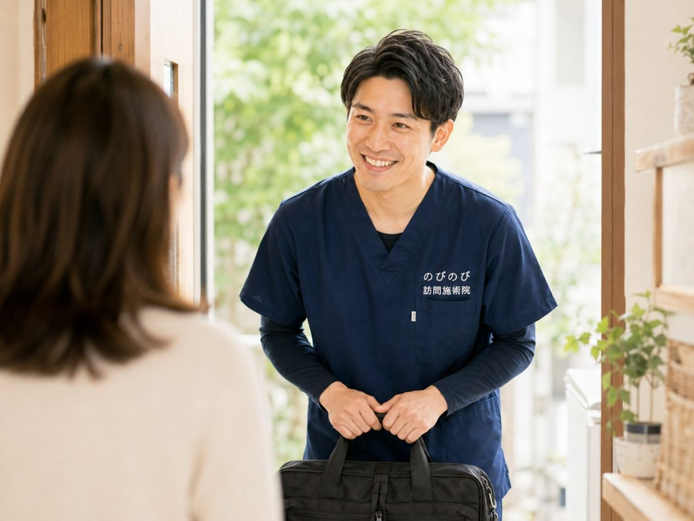

体調がすぐれない、急に通院が入った、家族の予定が変わった。決まった曜日にうかがう訪問でも、こうした事情で予定を変えたい日はどうしても出てきます。「せっかく来てもらうのに悪いな」と気をつかって、無理に受けてしまう方もいます。でも、そこは遠慮していただかなくて大丈夫です。日程の変更もお休みも、そのつどご相談いただけます。ここでは、連絡のしかたと、変更をめぐる考え方を整理してお伝えします。
この記事のポイント
予定を変えたいときは、電話などで分かった時点でお知らせください。早めだと調整しやすいのですが、体調が悪い日なら当日でもかまいません。費用はその月に受けた回数分だけなので、休んだ回の料金はかかりません。目安は1回3,950円で、自己負担は1割の方で約395円。エリア内は別途の出張費もかからず、どこでも同額です。定期的にうかがう形でも、その時々の暮らしに合わせて柔軟に組み替えられます。
予定を変えたいときは、まず一報を
訪問鍼灸マッサージは、決まった曜日・時間にうかがう形が基本です。生活のリズムに施術がなじむと、体の調子も整えやすくなるからです。とはいえ暮らしのなかでは、思いがけず予定が入れ替わることがあります。通院の日が動いた、家族の用事ができた、なんとなく気分がのらない。理由は何であれ、変えたいと思ったら、その時点でお知らせいただければ大丈夫です。
連絡は電話でのご相談が中心です。日程が分かった時点で一報いただけると、こちらも別のお約束との兼ね合いを見て、次回のご案内をしやすくなります。難しく考える必要はありません。「この日はやめておきたい」「別の日にできますか」と、ひとことで十分です。ご本人からでも、ご家族や施設の方からでも、どなたのご連絡でもかまいません。
体調がすぐれない日は、無理をしないで
熱っぽい、だるさが強い、痛みが出ている。そんな日に無理をして施術を受ける必要はありません。かえって体にこたえそうなときは、遠慮なくお休みを選んでください。その日の様子によっては、施術を軽めにする、時間を短くする、といった加減もできます。どうするかは、当日のお体の状態を見ながら一緒に決めていきましょう。
「今日はやめておきたい」というご本人やご家族の感覚は、たいてい理にかなっています。少し休んで体調が戻ってから、あらためてうかがえば十分です。受けたことでどう感じるかには個人差がありますから、その日のご自身の感覚を優先していただければと思います。
当日の連絡でも、遠慮はいりません
「朝起きたら調子が悪い」というのは、前もって分かるものではありません。ですから、体調不良でのお休みは当日のご連絡でもかまいません。うかがう時間の前に一本お電話をいただければ、その日は見送って別の日に組み直します。急なお休みで気をつかわれる方もいますが、体のことが第一ですので、そこは気になさらないでください。
もちろん、通院や来客など前もって分かっている予定であれば、早めにお知らせいただけると助かります。こちらも余裕をもって振り替え先を考えられますし、次にいつうかがうかを、その電話のなかで一緒に決めてしまうこともできます。早め・当日、どちらの連絡も歓迎です。
お休みした回の費用はかからない
費用は、その月に実際に受けた回数分だけをお支払いいただく形です。ですから、キャンセルやお休みをした回の料金がかかることはありません。月の途中で体調をくずして何回か休んだ場合は、その分を差し引いた回数でのご請求になります。休んだからといって、あとから思わぬ請求が来る心配もありません。
お支払いは月ごとにまとめてお願いしています。いつ受けていつ休んだかも、そこで確かめていただけます。金額の目安は1回3,950円、自己負担は1割の方で約395円です。エリア内であれば別途の出張費はかからず、どこにうかがっても同額です。
入院・通院が重なったとき
入院することになった、検査や通院がしばらく続く。そういうときも、まずはお知らせください。入院中はいったんお休みにして、退院してご自宅に戻られたら再開する、という形が取れます。復帰の時期が読みにくいときは、はっきりしてからのご連絡でかまいません。
退院直後は体の力が落ちていることも多いので、様子を見ながら、無理のない範囲で少しずつ戻していきます。同じ時期に医療保険のリハビリなどを受ける場合は、制度上の重なりの決まりがあります。その点は状況をうかがったうえで確認し、調整のしかたをご案内します。
しばらくお休みして、また再開したいとき
季節の変わり目や家庭の事情で、少しの間お休みしたいというときも遠慮はいりません。お休みの間に医師の同意書の期限が来る場合の扱いなども、こちらで確認してお伝えします。手続きの心配ごとは、抱えこまずに預けていただければと思います。
落ち着いてまた受けたくなったら、いつでも再開のご連絡をください。久しぶりでも、その時点のお体の状態を確かめたうえで、無理なく進めていきます。長くおつきあいするなかで、続けやすいペースを一緒に見つけていければと考えています。
曜日や時間そのものを見直したいとき
「デイサービスに通う曜日が変わった」「家族が立ち会える時間にしたい」。決まった曜日・時間そのものを変えたいときも、できる範囲で合わせます。単発の振り替えではなく、これからずっとの曜日を組み替えたい、というご相談も歓迎です。
同じ担当が定期的にうかがう形を続けたいので、生活のリズムに無理なくなじむ時間帯を一緒に探せればと思います。まずは希望の曜日・時間帯をお聞かせください。そのうえで、実際にうかがえる枠と照らし合わせて、落としどころを見つけていきます。
間があくとつらさが戻りやすい方へ
お休みは気がねなくしていただいてよいのですが、いっぽうで、間があくと体のこわばりやつらさが戻りやすい、という方もいます。そういう場合は、完全に空けてしまうより、短い時間でも間を詰めて続けたほうが、結果として楽に過ごせることがあります。
とはいえ、これは無理に回数を増やすという話ではありません。休みたいときは休み、続けたほうがよさそうなときは形を工夫する。その見極めを、お体の様子とご希望をうかがいながら決めます。感じ方には個人差がありますから、ご本人の実感を大事にしながら、続けやすい受け方をすり合わせていきましょう。
天候や災害で訪問がむずかしいとき
台風や大雪、強い雨のときなど、天候によって訪問がむずかしくなることもあります。そうした場合は、こちらからも早めにご連絡して、日程を組み直します。反対に、ご本人やご家族が「今日は外の様子が心配だから見送りたい」と感じたときも、遠慮なくお知らせください。
地震などで予定どおりにうかがえないときも、まずは安全が第一です。落ち着いてから、あらためてご相談のうえ再開します。無理をして受けることはありませんので、そのときどきの状況に合わせて判断していただければと思います。
よくある質問
当日のキャンセルでも大丈夫ですか？
体調がすぐれない日などは、当日でもかまいません。うかがう時間の前にお電話いただければ、その日は見送って別の日に組み直します。分かった時点でお早めにご連絡いただけると助かりますが、急なときこそ無理はなさらないでください。
お休みした分の料金はどうなりますか？
費用はその月に受けた回数分だけです。キャンセルやお休みをした回の料金はかかりません。お支払いは月ごとにまとめてお願いしており、受けた回数は明細でご確認いただけます。
キャンセル料はかかりますか？
休んだ回はその月のご請求に含まれないので、その分の料金は発生しません。当日の体調不良でのお休みも同じ考え方です。詳しいご事情は、遠慮なく電話でご相談ください。
定期の訪問でも、そのつど予定を変えられますか？
変えられます。決まった曜日・時間が基本ですが、一回だけの振り替えも、曜日そのものの組み替えも、できる範囲で合わせます。まずは希望をお聞かせください。
しばらく休むと同意書はどうなりますか？
お休みの間に医師の同意書の期限が来る場合の扱いは、こちらで確認してご案内します。再開のご連絡をいただければ、必要な手続きも一緒に整えます。
誰が連絡すればいいですか？
ご本人からでも、ご家族や施設の方からでもかまいません。お名前と、変更したい日、できれば理由（体調・通院・用事など）を教えていただけると、次回のご案内がスムーズです。
間があくと体が戻ってしまいそうで不安です。
つらさが戻りやすい方は、短い時間でも間を詰めて続けたほうが楽なことがあります。無理に回数を増やすという話ではなく、お体の様子を見ながら続けやすい形を一緒に考えます。感じ方には個人差があります。
1回いくらかかりますか？
目安は1回3,950円で、自己負担は1割の方で約395円です。エリア内であれば別途の出張費はかからず、どこにうかがっても同額です。